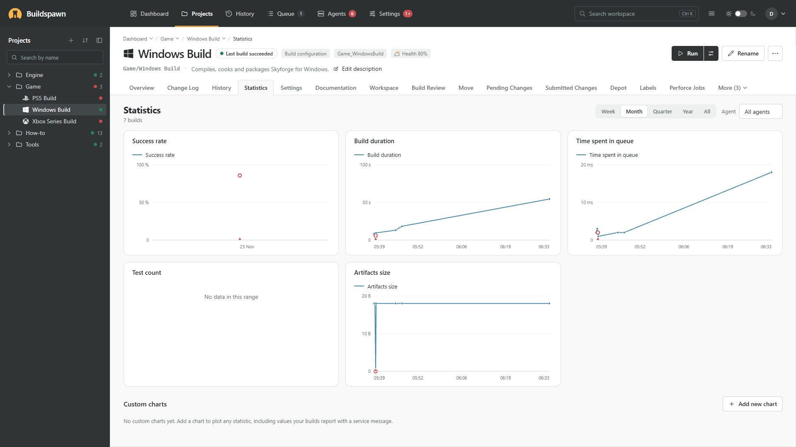

The Statistics tab
Charts of how a build configuration does over time: how often it passes, how long it takes, how long builds wait, how many tests pass and how big the artifacts are. You can add charts for numbers your own builds report.

When to use it
Use it to spot a build that slowly gets longer, a flaky build whose success rate drops, a queue that grows, or a package that doubles in size. You see it at once, without reading single builds.
Open it
- Open the build configuration, for example Game / Windows Build.
- Click the Statistics tab. It is one of the five fixed first tabs.
The controls
| Control | What it does | Default |
|---|---|---|
| Week, Month, Quarter, Year, All | The time range: the last 7 days, 30 days, 90 days, 365 days, or all builds. Under the title, a line says how many builds are in the range. | Month |
| Agent | Show only the builds that ran on one agent. All agents shows every build. Use it to compare machines. | All agents |
The five default charts
| Chart | What it shows |
|---|---|
| Success rate | The share of finished builds that did not fail, in percent. One point for each day (for each week in the Year and All ranges). Aborted builds and builds that did not run do not count. A red point means a failure on that day. |
| Build duration | How long each build took. |
| Time spent in queue | How long each build waited for an agent before it started. |
| Test count | Three lines: Passed tests, Failed tests and Ignored tests. It says No data in this range when no build published a test report. |
| Artifacts size | The total size of the files each build kept. It is recorded only when the build keeps them in the standard storage on the server. Builds that keep artifacts in remote storage have no point. |
Read a chart
- The horizontal axis is time. For a short range it shows times as well as days, and never repeats a label. The vertical axis picks units that fit, such as s, ms, B or %.
- Each point is one build. A failed build has a larger red point.
- Move the mouse over a point (or press ← and →, Home and End while the chart has focus) to see a tip: the build number, the date and each value.
- Click a point, or press Enter on it, to open that build.
- The charts redraw when the page gets narrower, for example when you fold or resize the sidebar.
Custom charts
Below the default charts, Custom charts plots any number you choose. Anyone who can configure the build configuration can add and remove charts.
Report a number from a build
A build step prints a line like this. The number is then kept for that build:
##buildspawn[buildStatisticValue key='coverage' value='81.5']# PowerShell: report the size of the Windows package in megabytes
$mb = [math]::Round((Get-Item Build\Game-Win64.zip).Length / 1MB, 1)
Write-Host "##buildspawn[buildStatisticValue key='package.win64.mb' value='$mb']"keyis a name of letters, digits,.,-and_, up to 100 characters.valuemust be a number, for example12,-3.5or1.2e6.- If a build prints the same key twice, the last value counts. A build keeps up to 200 keys. A line with a bad key or value is ignored.
- You cannot overwrite the numbers Buildspawn measures itself, such as the build duration.
See Service messages for every message a script can print.
Add a chart
- On the Statistics tab, under Custom charts, click Add new chart.
- Type a Title, or leave it empty to name the chart after its statistics (up to 100 characters).
- Under Statistics to plot, choose one or more, up to 10. The list holds the built-in numbers and every key your builds reported. It says No custom statistics yet. Report one from a build log. when there are none.
- Click Add. A message says Chart added.
- To change the order, use Move up and Move down on the chart. To delete it, use Remove chart. A build configuration can have up to 30 custom charts.
What you see when it runs
Charts fill in as builds finish. A new build configuration says No builds in this range and shows the line to print. Values come from the end of each build, so a running build shows no point yet.
Problems and fixes
| Problem | What to do |
|---|---|
| No builds in this range | Choose a longer range, or All agents. |
| My custom number is not in the list. | The build must print the line while a step runs, and must finish. Check the log for the exact line, with single quotes. |
| A chart shows no points. | The builds in the range did not report that number. |
| Could not load the statistics or Could not save the charts | Reload the page. To save charts you need the permission to configure the build configuration. |